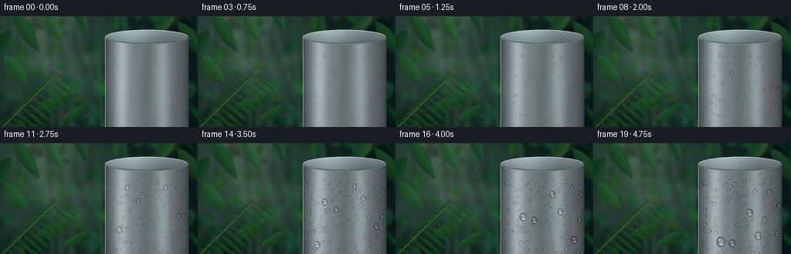
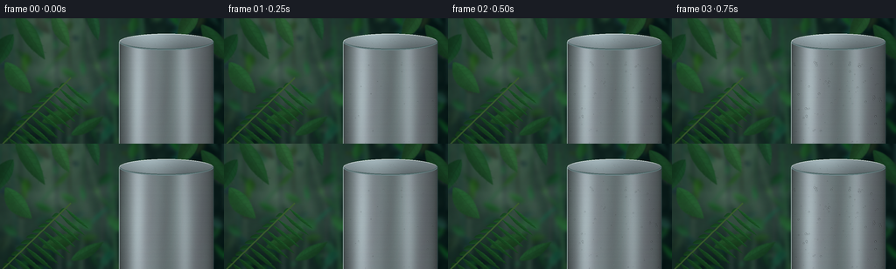

CODING AGENTS AS PIXEL WORLD MODELS
traex/GPT-6.1-Sol · phygen_113
点击播放 · 原生 RGB 像素
逐轮保存的候选
回放视频、检查图与代码变化。
每份候选均可单独播放。实际图片检查记录在下方工具轨迹中。
候选 01播放与检查图
点击播放 · 原生 RGB 像素


展开代码变化
--- 上一保存版本
+++ 本次保存版本
@@ -0,0 +1,258 @@
+from pathlib import Path
+import math
+import numpy as np
+from PIL import Image, ImageDraw, ImageFilter
+from artifact_io import save
+
+ROOT=Path(__file__).resolve().parent
+W,H,S=256,144,3
+WW,HH=W*S,H*S
+rng=np.random.default_rng(113)
+Y,X=np.mgrid[0:HH,0:WW].astype(float)/S
+
+def im(arr):
+ return Image.fromarray(np.clip(arr,0,255).astype(np.uint8),'RGB')
+
+def smooth_noise(seed,scale):
+ r=np.random.default_rng(seed)
+ a=r.random((max(2,int(H/scale)+2),max(2,int(W/scale)+2)))
+ return np.asarray(Image.fromarray((a*255).astype('uint8')).resize((WW,HH),Image.Resampling.BICUBIC)).astype(float)/255
+
+# A layered botanical backdrop, with depth-dependent diffusion.
+base=np.zeros((HH,WW,3),float)
+light=np.exp(-((X-59)/93)**2-((Y-24)/87)**2)
+for c,(lo,hi) in enumerate([(8,56),(27,85),(25,69)]): base[:,:,c]=lo+(hi-lo)*light
+texture=smooth_noise(50,30)*.55+smooth_noise(51,10)*.3+smooth_noise(52,3)*.15
+base+=(texture[:,:,None]-.5)*np.array([21,31,22])
+bg=im(base)
+
+# Leaf geometry: asymmetrical tapered lanceolate blade with a folded midrib.
+def leaf(canvas, a,b,width,color,seed,detail=True):
+ r=np.random.default_rng(seed)
+ ax,ay=a; bx,by=b
+ vx,vy=bx-ax,by-ay; length=math.hypot(vx,vy)
+ if length<.1:return
+ nx,ny=-vy/length,vx/length
+ bend=float(r.uniform(-.16,.16))*width
+ sides=[]
+ for sg in (1,-1):
+ pts=[]
+ for t in np.linspace(0,1,23):
+ f=math.sin(math.pi*t)**.84
+ wid=width*f*(1-.25*t)*(1 if sg==1 else .80)
+ cx=ax+t*vx+nx*bend*math.sin(math.pi*t)
+ cy=ay+t*vy+ny*bend*math.sin(math.pi*t)
+ pts.append(((cx+sg*nx*wid)*S,(cy+sg*ny*wid)*S))
+ sides.append(pts)
+ mask=Image.new('L',(WW,HH));d=ImageDraw.Draw(mask);d.polygon(sides[0]+sides[1][::-1],fill=255)
+ m=np.asarray(mask)/255.
+ along=((X-ax)*vx+(Y-ay)*vy)/length**2
+ across=((X-ax)*nx+(Y-ay)*ny)/max(width,1)
+ shade=.73+.26*np.exp(-((across+.36)/.53)**2)+.15*(1-np.clip(along,0,1))
+ noise=(smooth_noise(seed+999,2)-.5)*.055
+ shade+=noise
+ pixels=np.asarray(canvas).astype(float)
+ leafrgb=shade[:,:,None]*np.array(color)[None,None,:]
+ pixels=pixels*(1-m[:,:,None])+leafrgb*m[:,:,None]
+ canvas.paste(im(pixels))
+ if detail:
+ dr=ImageDraw.Draw(canvas)
+ vc=tuple(int(v*.72) for v in color)
+ dr.line([(ax*S,ay*S),(bx*S,by*S)],fill=vc,width=max(1,int(.40*S)))
+ for t in np.arange(.15,.90,.13):
+ f=math.sin(math.pi*t)**.84
+ cx,cy=ax+t*vx,ay+t*vy
+ for sg in (1,-1):
+ et=min(.99,t+.12)
+ ex=ax+et*vx+sg*nx*width*f*.74
+ ey=ay+et*vy+sg*ny*width*f*.74
+ dr.line([(cx*S,cy*S),(ex*S,ey*S)],fill=tuple(int(v*.88) for v in color),width=1)
+
+# Distance canopy and trunks.
+d=ImageDraw.Draw(bg)
+for j in range(19):
+ x=float(rng.uniform(-10,260)); y=float(rng.uniform(-40,10)); thickness=float(rng.uniform(1.5,6))
+ color=(int(rng.integers(22,45)),int(rng.integers(53,77)),int(rng.integers(47,63)))
+ d.line([(x*S,y*S),((x+rng.uniform(-12,12))*S,154*S)],fill=color,width=int(thickness*S))
+for j in range(140):
+ a=(rng.uniform(-30,280),rng.uniform(-25,160))
+ b=(a[0]+rng.uniform(-25,25),a[1]+rng.uniform(-24,24))
+ leaf(bg,a,b,rng.uniform(2,8),(rng.uniform(15,39),rng.uniform(47,90),rng.uniform(28,62)),200+j,False)
+bg=bg.filter(ImageFilter.GaussianBlur(2.1*S))
+# Soft shafts of light through the mist-filled canopy.
+arr=np.asarray(bg).astype(float)
+beams=np.zeros((HH,WW))
+for ox,w,amount in [(43,13,.18),(75,8,.12),(94,4,.08)]:
+ beams+=np.exp(-((X-ox-.31*Y)/w)**2)*amount*np.exp(-Y/195)
+arr=arr*(1-beams[:,:,None])+np.array([148,174,143])*beams[:,:,None]
+bg=im(arr)
+# Middle-ground hanging leaves, recognisable but softly out of focus.
+for j,(a,b,w,col) in enumerate([
+ ((17,-8),(51,47),11,(32,82,44)),((15,18),(-5,55),12,(23,69,38)),
+ ((60,-6),(79,33),10,(45,96,53)),((102,-14),(112,25),8,(30,79,48)),
+ ((226,-10),(203,24),11,(34,78,42)),((230,7),(263,51),12,(25,69,37)),
+ ((6,50),(36,86),13,(31,87,42)),((48,119),(91,104),10,(29,73,35)),
+ ((81,134),(118,113),8,(28,75,40))]):
+ leaf(bg,a,b,w,col,600+j)
+bg=bg.filter(ImageFilter.GaussianBlur(.55*S))
+
+# A foreground palm frond sweeps diagonally across the lower left.
+foreground=Image.new('RGB',(WW,HH),(0,0,0)); fgmask=Image.new('L',(WW,HH),0)
+# Render the frond on a copy, then use geometric difference as its coverage.
+fg=bg.copy()
+for j in range(12):
+ t=j/12
+ cx=3+78*t;cy=144-76*t
+ length=29*(math.sin(math.pi*(.10+.78*t))**.5)
+ for side in (-1,1):
+ b=(cx+side*length*.76+10,cy+side*length*.43+14)
+ leaf(fg,(cx,cy),b,3.5*(1-.42*t),(23+7*t,68+22*t,32+9*t),800+j*2+(side+1)//2)
+ImageDraw.Draw(fg).line([(3*S,144*S),(81*S,68*S)],fill=(60,94,46),width=2*S)
+fgarr=np.asarray(fg); bgarr=np.asarray(bg)
+fgcoverage=np.any(fgarr!=bgarr,axis=2)
+
+# Stainless-steel canister, cropped at its base; curved forest reflections and brushed finish.
+x0,x1,cy,ry=136.,244.,27.,9.5
+u=(X-(x0+x1)/2)/((x1-x0)/2)
+body=(X>=x0)&(X<=x1)&(Y>=cy)
+cap=((u*u+((Y-cy)/ry)**2)<=1)
+metal_mask=body|cap
+n=np.clip(u,-1,1)
+normal=np.sqrt(np.maximum(0,1-n*n))
+bright=np.exp(-((X-157)/10)**2)*58+np.exp(-((X-211)/8)**2)*31
+shade=51+normal*87+bright-29*np.exp(-((X-190)/12)**2)
+# Some irregular broad green reflections, never a flat grey polygon.
+reflection=(np.sin(X*.105+np.sin(Y*.052)*.42)+.35*np.sin(X*.31+Y*.03))*5
+brushed=(smooth_noise(2000,.7)-.5)*2.2
+rowgrain=np.random.default_rng(12).normal(0,1,(HH,1))*.75
+metal=np.stack([shade*.93+reflection*.5,shade*1.015+reflection,shade*1.04+reflection*.75],axis=2)
+metal+=brushed[:,:,None]+rowgrain[:,:,None]
+# Top elliptical lid, with a cool broad specular sheen.
+capShade=123+41*np.exp(-((X-169)/30)**2)-27*(Y-cy)/ry
+capRGB=np.stack([capShade*.91,capShade*1.01,capShade*1.04],axis=2)
+metal=np.where(cap[:,:,None],capRGB+brushed[:,:,None],metal)
+metal_img=im(metal)
+d=ImageDraw.Draw(metal_img)
+d.ellipse((x0*S,(cy-ry)*S,x1*S,(cy+ry)*S),outline=(111,137,140),width=1*S)
+d.arc((x0*S,(cy-ry)*S,x1*S,(cy+ry)*S),185,345,fill=(222,232,227),width=1*S)
+d.arc(((x0+1)*S,(cy-ry+1)*S,(x1-1)*S,(cy+ry-1)*S),2,176,fill=(79,101,101),width=1*S)
+d.line([(x0*S,cy*S),(x0*S,HH)],fill=(173,194,192),width=1*S)
+d.line([(x1*S,cy*S),(x1*S,HH)],fill=(57,78,80),width=1*S)
+metal=np.asarray(metal_img).astype(float)
+
+# Lagrangian droplets: continuous nucleation/growth, coalescence, gravity-driven runoff.
+rng=np.random.default_rng(299)
+drops=[]
+for j in range(290):
+ x=float(rng.uniform(x0+3,x1-3)); y=float(rng.uniform(40,143))
+ birth=float(rng.uniform(-.05,.72))
+ # Most initial condensation is subpixel; visible beads grow in timelapse.
+ growth=float(rng.uniform(.72,2.0))
+ drops.append(dict(x=x,y=y,r=.08,birth=birth,growth=growth,alive=True,mobile=False,v=0.,id=j))
+# Deliberately clustered nucleation yields several unambiguous merged water drops.
+for j,(x,y) in enumerate([(164,52),(179,74),(214,55),(230,91),(154,104)]):
+ for k in range(4):
+ drops.append(dict(x=x+float(rng.normal(0,1.0)),y=y+float(rng.normal(0,1.3)),r=.08,birth=.06+k*.018,growth=2.35,alive=True,mobile=False,v=0.,id=300+j*4+k))
+trails=[]
+
+# Analytic bead renderer: metal refracted into a tiny transparent water lens.
+def bead(arr,x,y,r,moving=False):
+ sy=1.22 if moving else 1.03
+ rx=r; ry=r*sy
+ ix0=max(0,int((x-rx-1.5)*S));ix1=min(WW,int((x+rx+1.5)*S)+1)
+ iy0=max(0,int((y-ry-1.5)*S));iy1=min(HH,int((y+ry+1.5)*S)+1)
+ if ix0>=ix1 or iy0>=iy1:return
+ xx=X[iy0:iy1,ix0:ix1]; yy=Y[iy0:iy1,ix0:ix1]
+ dx=(xx-x)/rx;dy=(yy-y)/ry
+ q=np.sqrt(dx*dx+dy*dy)
+ coverage=np.clip((1-q)*r*S+0.5,0,1)
+ # Reverse the local environment inside the spherical cap.
+ sx=np.clip(((x-dx*r*.65+dx*.8)*S).astype(int),0,WW-1)
+ syi=np.clip(((y-dy*r*.6)*S).astype(int),0,HH-1)
+ refr=metal[syi,sx].copy()
+ centre=np.sqrt(np.maximum(0,1-q*q))
+ refr=refr*(.65+.35*centre[:,:,None])
+ # Dark meniscus, luminous lower crescent, sharp upper-left glint.
+ edge=np.exp(-((q-.88)/.10)**2)
+ refr-=edge[:,:,None]*np.array([34,38,38])
+ lower=np.exp(-((dx-.19)/.48)**2-((dy-.57)/.18)**2)
+ refr+=lower[:,:,None]*np.array([78,94,94])
+ glint=np.exp(-((dx+.33)/.19)**2-((dy+.40)/.14)**2)
+ refr=refr*(1-glint[:,:,None]*.9)+np.array([242,253,249])*glint[:,:,None]*.9
+ # Soft contact shadow on the lower-right side (not opaque black beads).
+ shadow=np.exp(-((q-1.07)/.15)**2)*np.clip((dx+dy+.3)*.30,0,.38)
+ patch=arr[iy0:iy1,ix0:ix1]
+ patch*=1-shadow[:,:,None]*.28
+ patch[:]=patch*(1-coverage[:,:,None])+np.clip(refr,0,255)*coverage[:,:,None]
+
+frames=[]
+for frame in range(20):
+ t=frame/19
+ # Integrate droplet accretion and merging in small time steps.
+ if frame>0:
+ for sub in range(5):
+ tt=(frame-1+(sub+1)/5)/19;dt=1/95
+ for a in drops:
+ if not a['alive'] or tt<a['birth']:continue
+ # Surface-area accretion on an existing nucleus.
+ a['r']=math.sqrt(a['r']**2+a['growth']**2*dt*2.0)
+ if a['mobile']:
+ oldy=a['y']; a['v']=min(195,a['v']+500*dt)
+ a['y']+=a['v']*dt
+ trails.append((a['x'],oldy,a['y'],min(a['r']*.24,.85),tt))
+ if a['y']>H+5:a['alive']=False
+ active=[a for a in drops if a['alive'] and tt>=a['birth']]
+ active.sort(key=lambda a:a['r'],reverse=True)
+ for i,a in enumerate(active):
+ if not a['alive']:continue
+ for b in active[i+1:]:
+ if not b['alive']:continue
+ dist=math.hypot(a['x']-b['x'],a['y']-b['y'])
+ if dist<(a['r']+b['r'])*.78:
+ va,vb=a['r']**3,b['r']**3
+ a['x']=(a['x']*va+b['x']*vb)/(va+vb)
+ a['y']=(a['y']*va+b['y']*vb)/(va+vb)
+ a['r']=(va+vb)**(1/3)
+ b['alive']=False
+ if a['r']>2.6 and tt>.40 and not a['mobile']:
+ a['mobile']=True;a['v']=8.
+ arr=np.asarray(bg).astype(float).copy()
+ # Advected vapor sheets remain spatially coherent over all twenty exposures.
+ cloud=np.zeros((HH,WW))
+ for j in range(5):
+ centerY=52+j*11+6*np.sin(X*.027-t*2.1+j*1.8)
+ stripe=np.exp(-((Y-centerY)/(7+j*1.6))**2)
+ mod=.55+.22*np.sin((X-t*55)*.048+j*2)+.16*np.sin((X-t*39)*.103+Y*.031+j)
+ cloud+=stripe*mod*(.085 if j<3 else .065)
+ cloud*=np.exp(-((X-87-t*12)/109)**2)
+ cloud=np.clip(cloud,0,.35)
+ fogcol=np.array([174,199,184])
+ arr=arr*(1-cloud[:,:,None])+fogcol*cloud[:,:,None]
+ # Static metal occludes forest mist; fine wisps softly pass along its cold face.
+ arr=np.where(metal_mask[:,:,None],metal,arr)
+ wet=np.zeros((HH,WW))
+ for x,ya,yb,width,age in trails:
+ # Permanent thin wet tracks, with slender refractive edges.
+ band=np.exp(-((X-x)/width)**2)*((Y>=ya)&(Y<=yb+.6))
+ wet=np.maximum(wet,band*.17)
+ arr=np.where(metal_mask[:,:,None],arr*(1-wet[:,:,None])+np.array([135,162,164])*wet[:,:,None],arr)
+ for a in drops:
+ if a['alive'] and t>=a['birth'] and a['r']>.12:
+ bead(arr,a['x'],a['y'],a['r'],a['mobile'])
+ # Micro-beading along the top plate reinforces condensation, not frost.
+ rr=np.random.default_rng(8001)
+ for j in range(28):
+ x=rr.uniform(145,235); y=rr.uniform(23,31)
+ r=.12+t*rr.uniform(.28,.65)
+ if (x-190)**2/54**2+(y-27)**2/9.5**2<.76:bead(arr,x,y,r)
+ # Vapor crossing the leading edge is translucent and leaves beads visible.
+ frontfog=cloud*.32*np.exp(-((X-140)/24)**2)*metal_mask
+ arr=arr*(1-frontfog[:,:,None])+fogcol*frontfog[:,:,None]
+ arr=np.where(fgcoverage[:,:,None],fgarr,arr)
+ # Subtle photographic vignette and a consistent fixed-camera color grade.
+ vignette=1-.16*((X-133)/171)**2-.08*((Y-76)/116)**2
+ arr*=vignette[:,:,None]
+ out=im(arr).resize((W,H),Image.Resampling.LANCZOS)
+ frames.append(np.asarray(out))
+save(np.stack(frames).astype(np.uint8),ROOT)
+print('Saved 20 RGB frames, 256x144, 4 fps.')
可观测工具轨迹
实际执行的命令与返回图片。
命令 1exit 0
/bin/bash -lc 'ls -la && cat prompt.txt && cat GENERATION_RULES.md && cat task_spec.json'
命令 2exit 0
/bin/bash -lc "cat artifact_io.py && python - <<'PY'
import PIL,numpy
print('PIL and numpy available')
PY"命令 3exit 0
/bin/bash -lc "cat > generate.py <<'PY'
from pathlib import Path
import math
import numpy as np
from PIL import Image, ImageDraw, ImageFilter
from artifact_io import save
ROOT=Path(__file__).resolve().parent
W,H,S=256,144,3
WW,HH=W*S,H*S
rng=np.random.default_rng(113)
Y,X=np.mgrid[0:HH,0:WW].astype(float)/S
def im(arr):
return Image.fromarray(np.clip(arr,0,255).astype(np.uint8),'RGB')
def smooth_noise(seed,scale):
r=np.random.default_rng(seed)
a=r.random((max(2,int(H/scale)+2),max(2,int(W/scale)+2)))
return np.asarray(Image.fromarray((a*255).astype('uint8')).resize((WW,HH),Image.Resampling.BICUBIC)).astype(float)/255
# A layered botanical backdrop, with depth-dependent diffusion.
base=np.zeros((HH,WW,3),float)
light=np.exp(-((X-59)/93)**2-((Y-24)/87)**2)
for c,(lo,hi) in enumerate([(8,56),(27,85),(25,69)]): base[:,:,c]=lo+(hi-lo)*light
texture=smooth_noise(50,30)*.55+smooth_noise(51,10)*.3+smooth_noise(52,3)*.15
base+=(texture[:,:,None]-.5)*np.array([21,31,22])
bg=im(base)
# Leaf geometry: asymmetrical tapered lanceolate blade with a folded midrib.
def leaf(canvas, a,b,width,color,seed,detail=True):
r=np.random.default_rng(seed)
ax,ay=a; bx,by=b
vx,vy=bx-ax,by-ay; length=math.hypot(vx,vy)
if length<.1:return
nx,ny=-vy/length,vx/length
bend=float(r.uniform(-.16,.16))*width
sides=[]
for sg in (1,-1):
pts=[]
for t in np.linspace(0,1,23):
f=math.sin(math.pi*t)**.84
wid=width*f*(1-.25*t)*(1 if sg==1 else .80)
cx=ax+t*vx+nx*bend*math.sin(math.pi*t)
cy=ay+t*vy+ny*bend*math.sin(math.pi*t)
pts.append(((cx+sg*nx*wid)*S,(cy+sg*ny*wid)*S))
sides.append(pts)
mask=Image.new('L',(WW,HH));d=ImageDraw.Draw(mask);d.polygon(sides[0]+sides[1][::-1],fill=255)
m=np.asarray(mask)/255.
along=((X-ax)*vx+(Y-ay)*vy)/length**2
across=((X-ax)*nx+(Y-ay)*ny)/max(width,1)
shade=.73+.26*np.exp(-((across+.36)/.53)**2)+.15*(1-np.clip(along,0,1))
noise=(smooth_noise(seed+999,2)-.5)*.055
shade+=noise
pixels=np.asarray(canvas).astype(float)
leafrgb=shade[:,:,None]*np.array(color)[None,None,:]
pixels=pixels*(1-m[:,:,None])+leafrgb*m[:,:,None]
canvas.paste(im(pixels))
if detail:
dr=ImageDraw.Draw(canvas)
vc=tuple(int(v*.72) for v in color)
dr.line([(ax*S,ay*S),(bx*S,by*S)],fill=vc,width=max(1,int(.40*S)))
for t in np.arange(.15,.90,.13):
f=math.sin(math.pi*t)**.84
cx,cy=ax+t*vx,ay+t*vy
for sg in (1,-1):
et=min(.99,t+.12)
ex=ax+et*vx+sg*nx*width*f*.74
ey=ay+et*vy+sg*ny*width*f*.74
dr.line([(cx*S,cy*S),(ex*S,ey*S)],fill=tuple(int(v*.88) for v in color),width=1)
# Distance canopy and trunks.
d=ImageDraw.Draw(bg)
for j in range(19):
x=float(rng.uniform(-10,260)); y=float(rng.uniform(-40,10)); thickness=float(rng.uniform(1.5,6))
color=(int(rng.integers(22,45)),int(rng.integers(53,77)),int(rng.integers(47,63)))
d.line([(x*S,y*S),((x+rng.uniform(-12,12))*S,154*S)],fill=color,width=int(thickness*S))
for j in range(140):
a=(rng.uniform(-30,280),rng.uniform(-25,160))
b=(a[0]+rng.uniform(-25,25),a[1]+rng.uniform(-24,24))
leaf(bg,a,b,rng.uniform(2,8),(rng.uniform(15,39),rng.uniform(47,90),rng.uniform(28,62)),200+j,False)
bg=bg.filter(ImageFilter.GaussianBlur(2.1*S))
# Soft shafts of light through the mist-filled canopy.
arr=np.asarray(bg).astype(float)
beams=np.zeros((HH,WW))
for ox,w,amount in [(43,13,.18),(75,8,.12),(94,4,.08)]:
beams+=np.exp(-((X-ox-.31*Y)/w)**2)*amount*np.exp(-Y/195)
arr=arr*(1-beams[:,:,None])+np.array([148,174,143])*beams[:,:,None]
bg=im(arr)
# Middle-ground hanging leaves, recognisable but softly out of focus.
for j,(a,b,w,col) in enumerate([
((17,-8),(51,47),11,(32,82,44)),((15,18),(-5,55),12,(23,69,38)),
((60,-6),(79,33),10,(45,96,53)),((102,-14),(112,25),8,(30,79,48)),
((226,-10),(203,24),11,(34,78,42)),((230,7),(263,51),12,(25,69,37)),
((6,50),(36,86),13,(31,87,42)),((48,119),(91,104),10,(29,73,35)),
((81,134),(118,113),8,(28,75,40))]):
leaf(bg,a,b,w,col,600+j)
bg=bg.filter(ImageFilter.GaussianBlur(.55*S))
# A foreground palm frond sweeps diagonally across the lower left.
foreground=Image.new('RGB',(WW,HH),(0,0,0)); fgmask=Image.new('L',(WW,HH),0)
# Render the frond on a copy, then use geometric difference as its coverage.
fg=bg.copy()
for j in range(12):
t=j/12
cx=3+78*t;cy=144-76*t
length=29*(math.sin(math.pi*(.10+.78*t))**.5)
for side in (-1,1):
b=(cx+side*length*.76+10,cy+side*length*.43+14)
leaf(fg,(cx,cy),b,3.5*(1-.42*t),(23+7*t,68+22*t,32+9*t),800+j*2+(side+1)//2)
ImageDraw.Draw(fg).line([(3*S,144*S),(81*S,68*S)],fill=(60,94,46),width=2*S)
fgarr=np.asarray(fg); bgarr=np.asarray(bg)
fgcoverage=np.any(fgarr"'!=bgarr,axis=2)
# Stainless-steel canister, cropped at its base; curved forest reflections and brushed finish.
x0,x1,cy,ry=136.,244.,27.,9.5
u=(X-(x0+x1)/2)/((x1-x0)/2)
body=(X>=x0)&(X<=x1)&(Y>=cy)
cap=((u*u+((Y-cy)/ry)**2)<=1)
metal_mask=body|cap
n=np.clip(u,-1,1)
normal=np.sqrt(np.maximum(0,1-n*n))
bright=np.exp(-((X-157)/10)**2)*58+np.exp(-((X-211)/8)**2)*31
shade=51+normal*87+bright-29*np.exp(-((X-190)/12)**2)
# Some irregular broad green reflections, never a flat grey polygon.
reflection=(np.sin(X*.105+np.sin(Y*.052)*.42)+.35*np.sin(X*.31+Y*.03))*5
brushed=(smooth_noise(2000,.7)-.5)*2.2
rowgrain=np.random.default_rng(12).normal(0,1,(HH,1))*.75
metal=np.stack([shade*.93+reflection*.5,shade*1.015+reflection,shade*1.04+reflection*.75],axis=2)
metal+=brushed[:,:,None]+rowgrain[:,:,None]
# Top elliptical lid, with a cool broad specular sheen.
capShade=123+41*np.exp(-((X-169)/30)**2)-27*(Y-cy)/ry
capRGB=np.stack([capShade*.91,capShade*1.01,capShade*1.04],axis=2)
metal=np.where(cap[:,:,None],capRGB+brushed[:,:,None],metal)
metal_img=im(metal)
d=ImageDraw.Draw(metal_img)
d.ellipse((x0*S,(cy-ry)*S,x1*S,(cy+ry)*S),outline=(111,137,140),width=1*S)
d.arc((x0*S,(cy-ry)*S,x1*S,(cy+ry)*S),185,345,fill=(222,232,227),width=1*S)
d.arc(((x0+1)*S,(cy-ry+1)*S,(x1-1)*S,(cy+ry-1)*S),2,176,fill=(79,101,101),width=1*S)
d.line([(x0*S,cy*S),(x0*S,HH)],fill=(173,194,192),width=1*S)
d.line([(x1*S,cy*S),(x1*S,HH)],fill=(57,78,80),width=1*S)
metal=np.asarray(metal_img).astype(float)
# Lagrangian droplets: continuous nucleation/growth, coalescence, gravity-driven runoff.
rng=np.random.default_rng(299)
drops=[]
for j in range(290):
x=float(rng.uniform(x0+3,x1-3)); y=float(rng.uniform(40,143))
birth=float(rng.uniform(-.05,.72))
# Most initial condensation is subpixel; visible beads grow in timelapse.
growth=float(rng.uniform(.72,2.0))
drops.append(dict(x=x,y=y,r=.08,birth=birth,growth=growth,alive=True,mobile=False,v=0.,id=j))
# Deliberately clustered nucleation yields several unambiguous merged water drops.
for j,(x,y) in enumerate([(164,52),(179,74),(214,55),(230,91),(154,104)]):
for k in range(4):
drops.append(dict(x=x+float(rng.normal(0,1.0)),y=y+float(rng.normal(0,1.3)),r=.08,birth=.06+k*.018,growth=2.35,alive=True,mobile=False,v=0.,id=300+j*4+k))
trails=[]
# Analytic bead renderer: metal refracted into a tiny transparent water lens.
def bead(arr,x,y,r,moving=False):
sy=1.22 if moving else 1.03
rx=r; ry=r*sy
ix0=max(0,int((x-rx-1.5)*S));ix1=min(WW,int((x+rx+1.5)*S)+1)
iy0=max(0,int((y-ry-1.5)*S));iy1=min(HH,int((y+ry+1.5)*S)+1)
if ix0>=ix1 or iy0>=iy1:return
xx=X[iy0:iy1,ix0:ix1]; yy=Y[iy0:iy1,ix0:ix1]
dx=(xx-x)/rx;dy=(yy-y)/ry
q=np.sqrt(dx*dx+dy*dy)
coverage=np.clip((1-q)*r*S+0.5,0,1)
# Reverse the local environment inside the spherical cap.
sx=np.clip(((x-dx*r*.65+dx*.8)*S).astype(int),0,WW-1)
syi=np.clip(((y-dy*r*.6)*S).astype(int),0,HH-1)
refr=metal[syi,sx].copy()
centre=np.sqrt(np.maximum(0,1-q*q))
refr=refr*(.65+.35*centre[:,:,None])
# Dark meniscus, luminous lower crescent, sharp upper-left glint.
edge=np.exp(-((q-.88)/.10)**2)
refr-=edge[:,:,None]*np.array([34,38,38])
lower=np.exp(-((dx-.19)/.48)**2-((dy-.57)/.18)**2)
refr+=lower[:,:,None]*np.array([78,94,94])
glint=np.exp(-((dx+.33)/.19)**2-((dy+.40)/.14)**2)
refr=refr*(1-glint[:,:,None]*.9)+np.array([242,253,249])*glint[:,:,None]*.9
# Soft contact shadow on the lower-right side (not opaque black beads).
shadow=np.exp(-((q-1.07)/.15)**2)*np.clip((dx+dy+.3)*.30,0,.38)
patch=arr[iy0:iy1,ix0:ix1]
patch*=1-shadow[:,:,None]*.28
patch[:]=patch*(1-coverage[:,:,None])+np.clip(refr,0,255)*coverage[:,:,None]
frames=[]
for frame in range(20):
t=frame/19
# Integrate droplet accretion and merging in small time steps.
if frame>0:
for sub in range(5):
tt=(frame-1+(sub+1)/5)/19;dt=1/95
for a in drops:
if not a['"'alive'] or tt<a['birth']:continue
# Surface-area accretion on an existing nucleus.
a['r']=math.sqrt(a['r']**2+a['growth']**2*dt*2.0)
if a['mobile']:
oldy=a['y']; a['v']=min(195,a['v']+500*dt)
a['y']+=a['v']*dt
trails.append((a['x'],oldy,a['y'],min(a['r']*.24,.85),tt))
if a['y']>H+5:a['alive']=False
active=[a for a in drops if a['alive'] and tt>=a['birth']]
active.sort(key=lambda a:a['r'],reverse=True)
for i,a in enumerate(active):
if not a['alive']:continue
for b in active[i+1:]:
if not b['alive']:continue
dist=math.hypot(a['x']-b['x'],a['y']-b['y'])
if dist<(a['r']+b['r'])*.78:
va,vb=a['r']**3,b['r']**3
a['x']=(a['x']*va+b['x']*vb)/(va+vb)
a['y']=(a['y']*va+b['y']*vb)/(va+vb)
a['r']=(va+vb)**(1/3)
b['alive']=False
if a['r']>2.6 and tt>.40 and not a['mobile']:
a['mobile']=True;a['v']=8.
arr=np.asarray(bg).astype(float).copy()
# Advected vapor sheets remain spatially coherent over all twenty exposures.
cloud=np.zeros((HH,WW))
for j in range(5):
centerY=52+j*11+6*np.sin(X*.027-t*2.1+j*1.8)
stripe=np.exp(-((Y-centerY)/(7+j*1.6))**2)
mod=.55+.22*np.sin((X-t*55)*.048+j*2)+.16*np.sin((X-t*39)*.103+Y*.031+j)
cloud+=stripe*mod*(.085 if j<3 else .065)
cloud*=np.exp(-((X-87-t*12)/109)**2)
cloud=np.clip(cloud,0,.35)
fogcol=np.array([174,199,184])
arr=arr*(1-cloud[:,:,None])+fogcol*cloud[:,:,None]
# Static metal occludes forest mist; fine wisps softly pass along its cold face.
arr=np.where(metal_mask[:,:,None],metal,arr)
wet=np.zeros((HH,WW))
for x,ya,yb,width,age in trails:
# Permanent thin wet tracks, with slender refractive edges.
band=np.exp(-((X-x)/width)**2)*((Y>=ya)&(Y<=yb+.6))
wet=np.maximum(wet,band*.17)
arr=np.where(metal_mask[:,:,None],arr*(1-wet[:,:,None])+np.array([135,162,164])*wet[:,:,None],arr)
for a in drops:
if a['alive'] and t>=a['birth'] and a['r']>.12:
bead(arr,a['x'],a['y'],a['r'],a['mobile'])
# Micro-beading along the top plate reinforces condensation, not frost.
rr=np.random.default_rng(8001)
for j in range(28):
x=rr.uniform(145,235); y=rr.uniform(23,31)
r=.12+t*rr.uniform(.28,.65)
if (x-190)**2/54**2+(y-27)**2/9.5**2<.76:bead(arr,x,y,r)
# Vapor crossing the leading edge is translucent and leaves beads visible.
frontfog=cloud*.32*np.exp(-((X-140)/24)**2)*metal_mask
arr=arr*(1-frontfog[:,:,None])+fogcol*frontfog[:,:,None]
arr=np.where(fgcoverage[:,:,None],fgarr,arr)
# Subtle photographic vignette and a consistent fixed-camera color grade.
vignette=1-.16*((X-133)/171)**2-.08*((Y-76)/116)**2
arr*=vignette[:,:,None]
out=im(arr).resize((W,H),Image.Resampling.LANCZOS)
frames.append(np.asarray(out))
save(np.stack(frames).astype(np.uint8),ROOT)
print('Saved 20 RGB frames, 256x144, 4 fps.')
PY
python generate.py"命令 4exit 0
/bin/bash -lc "python - <<'PY'
from pathlib import Path
import numpy as np
from PIL import Image
p=Path('.')
f=np.stack([np.asarray(Image.open(p/'frames'/f'{i:02d}.png')) for i in range(20)])
assert f.shape==(20,144,256,3) and f.dtype==np.uint8
assert all((p/x).exists() for x in ['generate.py','pixels.npz','index.html','inspection.png','transition_check.png'])
print('Verified:',f.shape, f.dtype)
print('Mean successive RGB change:',np.abs(np.diff(f.astype(float),axis=0)).mean().round(3))
print('Artifacts:',', '.join(x.name for x in p.iterdir() if x.is_file()))
PY"保存候选 1 份；完成命令 4 次；可验证图片返回 0 张。原始 API 响应与完整日志保留在本地。